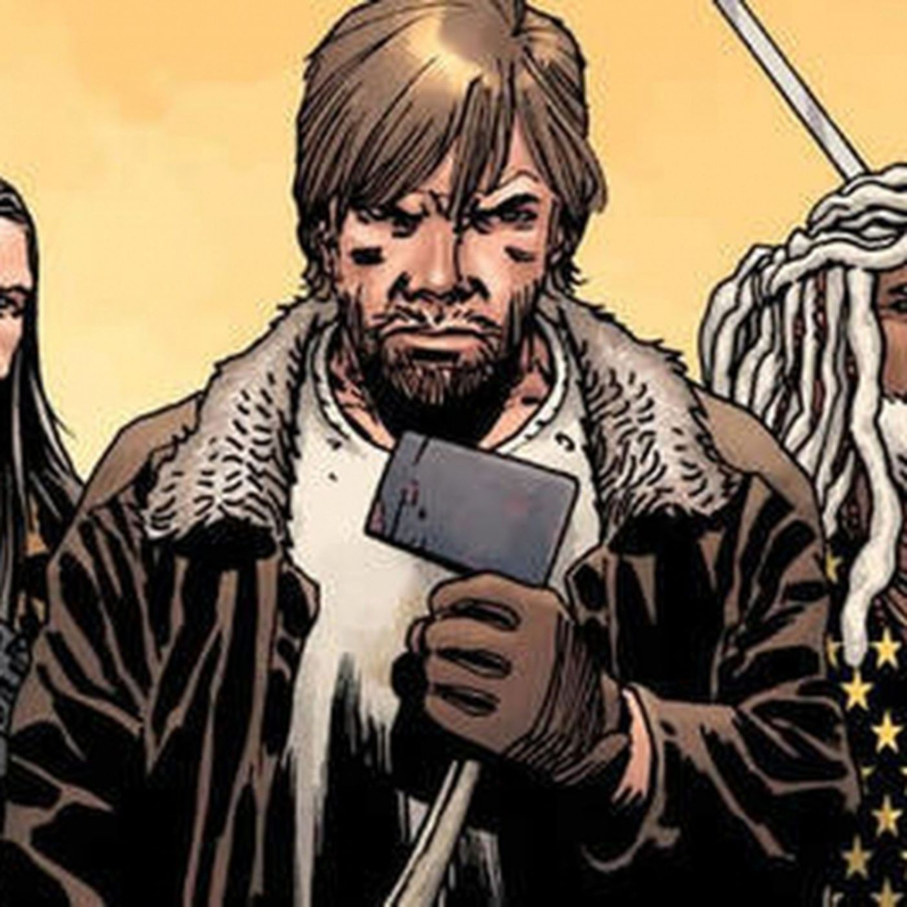
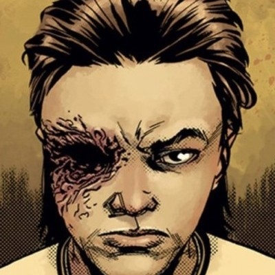
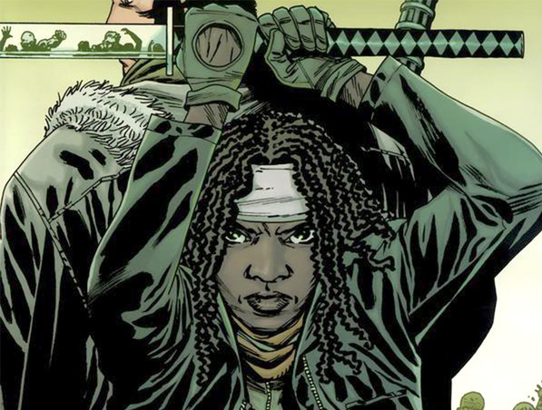

A virus of unknown origins spreads over earth , causing the dead to rise from the grave and hunger for human flesh.
A group of survivors lead by Rick Grimes, is one of humanities last chances to reform and rebuild, but others enjoy the chaos, and abuse the lawless land to get what they want.
Rick Grimes' son Carl, is raised into this apocalyptic wasteland. He ends up becoming a leader, and like his father, tries to make earth a civilized place again.
Whether the world will go back to being the way it was is unknown. Their only hope is to try to make the best out of the worst situation. Fighting the dead, and fearing the living.
The three main characters of The Walking Dead are most definitely:
  Rick Grimes(Left) is the leader of the group. Father of Carl Grimes, he's very a protective father and a sheriff, who has to break his oaths to protect the ones he loves.
Carl Grimes(Middle) is the son of Rick Grimes. The wasteland is really the only life he's known. Growing up in the apocalypse. Carl is a extreme survivor, losing an eye at 9. He still goes on, determined not to die.
Michonne(Right) is an ally to Carl and Rick. She carries walkers on leashes to silently walk through hoards, and uses her Katana to silently eliminate walkers without drawing attention.